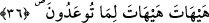
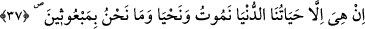
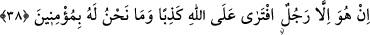
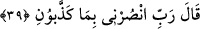

36. “Bu size vâdedilen (öldükten sonra yeniden dirilmek, gerçek olmaktan) çok
uzak!”
“Bu size vaad edilen” öldükten sonra yeniden diriltilme (ba‘s) ve yapılanların
karşılığının verilmesi, gerçek olmaktan “çok uzak!” asla olmayacak.
“__WORD__ “__WORD__ uzak/imkansız olmak anlamında isim fiildir. Tekrar edilmesi uzaklığı
te’kid içindir. Sanki onlar uzaklık ifâdesini seslendirdiler ve onlara: “Bu uzak görme
neden dolayıdır?” diye soruldu. Bunun üzerine “size vaadedilen” diye cevap verildi.
37. “Hayat, şu dünya hayatımızdan ibarettir. (Kimimiz) ölürüz, (kimimiz)
yaşarız; bir daha diriltilecek de değiliz.”
“Hayat, şu” âdî ve fânî “dünya hayatımızdan ibâarettir.” Zamanın nihâyetine kadar
kimimiz “ölürüz,” kimimiz “yaşarız;” ya da iki şey; ölüm ve hayat bize isâbet eder.”
Onlar bu sözleriyle dünyada geçen hayatı ve ardından olacak ölümü, onun ötesinde ise
bir hayat olmadığını kasdediyorlardı.
Ey Hûd, senin iddiâ ettiğin gibi ölümden sonra “bir daha diriltilecek de değiliz.”
Onların kalblerinin nasıl körleşip de tekrar yaratmanın ilk olarak yaratmadan daha
kolay olduğunu, bir şeyi yoktan var etmeye ve var iken yok etmeye kâdir olanın onu
tekrar yaratmaya da kâdir olduğunu idrak edemediklerine bir bak.
38. “O, Allah hakkında yalnızca yalan uyduran bir adamdır; biz ona
inanmıyoruz.”
“O,” yâni Hûd “Allah hakkında yalnızca yalan uyduran bir adamdır;” yâni o iddiâ
ettiği kendisinin peygamber olarak gönderildiği ve yeniden diriltme (ba‘s) konusunda
Allah’a yalan isnâd etmiştir. “Biz ona inanmıyoruz.” söylediklerini tasdik etmiyoruz.
39. O peygamber: “Rabbim, beni yalanlamalarına karşılık bana yardımcı ol!” dedi
“O peygamber:” Hûd (a.s.) onların îmân etmelerinden ümid kesince “Rabbim, beni